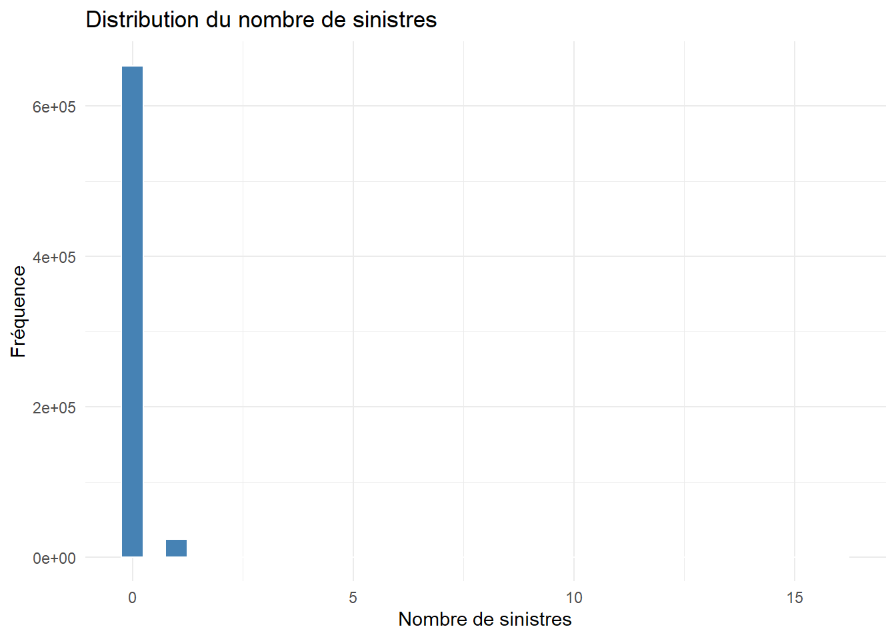
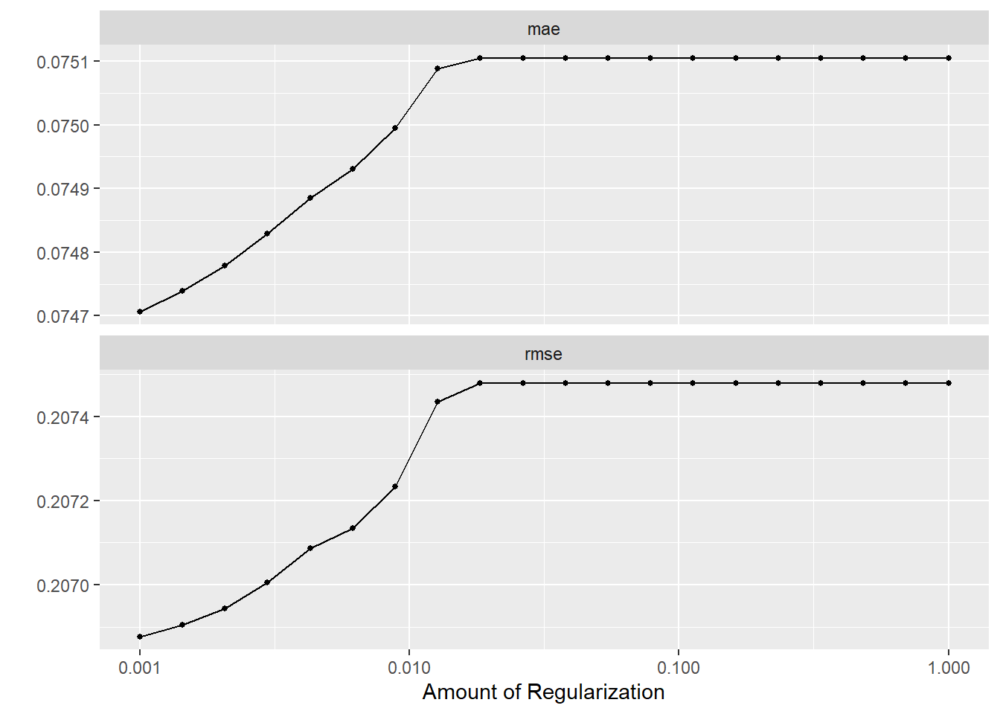

Machine Learning appliqué à l’actuariat
2026-03-18
Chapire1 Fondements et contexte
1.1 Introduction au Machine Learning en Actuariat
1.1.1 L’évolution du métier d’actuaire : du statisticien au data scientist
Historiquement, le métier d’actuaire s’est construit autour de l’application des méthodes statistiques et probabilistes à la gestion des risques assurantiels et financiers. Comme le rappellent Denuit, Hainaut, et Trufin (2019), cette discipline s’est édifiée sur des piliers fondamentaux qui ont traversé les décennies.
Les tables de mortalité constituent le premier de ces piliers. Véritables monuments démographiques, elles ont été patiemment construites à partir d’observations accumulées sur des décennies, permettant aux actuaires de tarifer les contrats d’assurance vie avec une précision croissante. Les modèles linéaires généralisés (GLM), introduits dans la pratique actuarielle dans les années 1990, représentent le second pilier. Ils sont devenus la pierre angulaire de la tarification non-vie, offrant un cadre théorique solide pour modéliser la fréquence et la sévérité des sinistres Frees, Meyers, et Derrig (2014).
Les processus stochastiques constituent le troisième pilier, mobilisés pour la modélisation des réserves et des engagements. Ils permettent de capturer la dynamique temporelle des risques et d’évaluer la solvabilité des organismes assureurs. Enfin, les simulations de Monte-Carlo se sont imposées comme l’outil incontournable pour l’évaluation des risques dans le cadre de Solvabilité II, permettant d’agréger des risques de nature différente et de quantifier les besoins en fonds propres.
Cette approche traditionnelle reposait sur une hypothèse fondamentale : la réalité peut être décrite par un modèle paramétrique relativement simple, soigneusement choisi par l’actuaire sur la base de sa connaissance approfondie du métier et des mécanismes assurantiels. Cette hypothèse de parcimonie, héritée de la statistique classique, a guidé la pratique actuarielle pendant plusieurs décennies.
1.1.1.1 Les transformations récentes du secteur
Trois évolutions majeures ont profondément transformé le paysage de l’assurance et, avec lui, la pratique du métier d’actuaire.
L’explosion du volume et de la variété des données disponibles constitue sans doute la rupture la plus significative. Comme le soulignent Henckaerts et al. (2021), les actuaires ont désormais accès à des sources de données d’une richesse sans précédent. Les données télématiques, issues des boîtiers connectés installés dans les véhicules, renseignent avec une précision fine sur les comportements de conduite. Les objets connectés, tels que les montres ou les capteurs domestiques, livrent des informations sur les habitudes de vie des assurés. Les données géolocalisées atteignent une finesse inédite, permettant d’affiner l’évaluation des risques catastrophiques. Les réseaux sociaux, bien que leur utilisation reste encadrée, offrent des perspectives comportementales nouvelles.
Parallèlement, les attentes réglementaires et concurrentielles se sont considérablement durcies. Solvabilité II exige une connaissance toujours plus fine des risques et une évaluation prospective de la solvabilité. IFRS 17 impose une évaluation plus précise des passifs d’assurance, nécessitant des modèles de plus en plus sophistiqués. La concurrence des insurtechs, qui proposent des offres ultra-personnalisées et des expériences client innovantes, a redéfini les standards du marché. Les assureurs traditionnels doivent désormais faire preuve d’une réactivité accrue, avec des modèles fréquemment mis à jour pour s’adapter à l’évolution des risques et des comportements.
Enfin, la démocratisation des outils de calcul a levé les verrous techniques qui limitaient jusqu’alors les ambitions des modélisateurs. La puissance de calcul accessible via le cloud computing permet d’entraîner des modèles complexes sur des volumes de données massifs. La maturation de bibliothèques open source performantes, tant en R qu’en Python, met à disposition des algorithmes de pointe sans nécessiter de développements coûteux. L’émergence de langages dédiés à la data science a considérablement facilité l’expérimentation et le déploiement de méthodes innovantes.
1.1.1.2 Le nouveau périmètre de compétences de l’actuaire
Face à ces transformations, le périmètre de compétences de l’actuaire s’est considérablement élargi. Delong, Lindholm, et Wüthrich (2021) soulignent que l’actuaire moderne doit désormais naviguer entre deux mondes : celui de la statistique classique, avec ses fondements théoriques éprouvés, et celui du machine learning, avec sa flexibilité et sa puissance prédictive.
Aux compétences traditionnelles que sont la maîtrise de la statistique inférentielle, des GLM, des séries temporelles, des outils comme Excel ou VBA, et la capacité à produire des rapports écrits, s’ajoutent désormais des compétences nouvelles. La connaissance des arbres de décision, des forêts aléatoires, du gradient boosting et du deep learning devient indispensable pour exploiter pleinement le potentiel des données. La maîtrise des langages de programmation comme R et Python, ainsi que des bases de données avec SQL, est désormais attendue. L’art de la visualisation de données, pour communiquer efficacement des résultats complexes à des interlocuteurs non techniques, s’impose comme une compétence clé. Enfin, une compréhension des enjeux de data engineering et de MLOps est nécessaire pour déployer et maintenir les modèles en production dans des conditions industrielles.
Cette évolution ne signifie pas pour autant un rejet des méthodes traditionnelles. Comme le soulignent Denuit, Hainaut, et Trufin (2019), l’actuaire moderne ne remplace pas ses outils traditionnels mais les enrichit considérablement. Le GLM conserve sa pertinence dans de nombreux contextes, notamment lorsque l’interprétabilité est primordiale ou lorsque les volumes de données sont limités. Il est désormais systématiquement complété par des algorithmes capables de capturer des relations plus complexes que les approches paramétriques classiques ne peuvent appréhender.
1.1.2 Pourquoi le Machine Learning ? Limites des approches classiques
1.1.2.1 Les GLM : forces et faiblesses
Les modèles linéaires généralisés présentent des avantages indéniables qui expliquent leur succès durable et leur position toujours centrale en actuariat. Comme le rappellent Hastie, Tibshirani, et Friedman (2009), leur interprétabilité est remarquable : chaque coefficient a une signification claire en termes d’effet marginal de la variable correspondante sur la prédiction à l’échelle de la fonction de lien. Leurs fondements statistiques solides, ancrés dans la théorie des modèles exponentiels, leur confèrent une robustesse appréciée des praticiens et des régulateurs. Leur maîtrise par l’ensemble de la profession, y compris par les autorités de contrôle, en fait un langage commun compris de tous les acteurs. Leur efficacité computationnelle permet une estimation rapide même sur des volumes de données conséquents, grâce à des algorithmes d’estimation par maximum de vraisemblance bien maîtrisés.
Ces qualités ne doivent cependant pas masquer les limites qui apparaissent lorsque l’on confronte les GLM à la complexité des données et des phénomènes assurantiels contemporains.
La première limite réside dans l’hypothèse de linéarité du prédicteur. Formellement, un GLM s’écrit :
\[\begin{equation} g(\mathbb{E}[Y|X]) = \beta_0 + \beta_1 X_1 + \beta_2 X_2 + \cdots + \beta_p X_p \end{equation}\]
où \(g\) est la fonction de lien. Cette spécification impose que l’effet de chaque variable soit additif et linéaire à l’échelle de la fonction de lien choisie. Or la réalité assurantielle est rarement aussi simple. L’effet de l’âge sur le risque automobile n’est pas linéaire, comme en témoigne la forme en U de la courbe des sinistralités : les jeunes conducteurs présentent une sinistralité élevée qui décroît avec l’expérience, avant de remonter légèrement chez les seniors. Des interactions complexes existent entre variables, par exemple entre l’âge du conducteur et la puissance du véhicule. Un jeune conducteur au volant d’une voiture puissante présente un risque bien supérieur à la somme des risques individuels, phénomène que Henckaerts et al. (2021) qualifient de synergie de risque. Des effets de seuil peuvent apparaître, comme un changement brutal de comportement à partir d’un certain kilométrage annuel, que la linéarité du prédicteur ne peut capturer.
La deuxième limite tient à la nécessité de spécifier manuellement les interactions. Dans un GLM, toute interaction entre variables doit être explicitement écrite dans la formule du modèle :
Cette spécification oblige l’actuaire à deviner quelles interactions sont pertinentes, une tâche qui devient rapidement impossible lorsque le nombre de variables augmente. Le nombre d’interactions potentielles croît en effet de manière quadratique avec la dimension du problème : avec \(p\) variables, il existe \(p(p-1)/2\) interactions d’ordre deux, sans même considérer les ordres supérieurs.
La troisième limite concerne la gestion des variables à haute cardinalité. Comment traiter une variable comme le code postal, qui compte près de trente-six mille modalités en France métropolitaine ? analysent en détail cette problématique et montrent les limites des solutions classiques. Le regroupement manuel des codes postaux en zones plus larges, par exemple au niveau des départements ou des régions, introduit une part de subjectivité et peut faire perdre une information géographique précieuse, notamment pour l’évaluation des risques naturels. L’encodage de la variable cible, qui consiste à remplacer chaque modalité par la moyenne de la variable à prédire pour cette modalité, génère un risque élevé de surapprentissage car il utilise l’information de la variable cible pour construire les prédicteurs. L’abandon pur et simple de l’information géographique fine revient à se priver d’un puissant prédicteur, notamment pour les risques dépendant de la localisation comme le vol ou les catastrophes naturelles.
1.1.2.2 Ce qu’apporte le Machine Learning
Le machine learning apporte des réponses à chacune de ces limitations. Comme le soulignent Frees, Meyers, et Derrig (2016), les algorithmes modernes permettent de s’affranchir de nombreuses hypothèses restrictives des modèles paramétriques classiques.
Les relations non linéaires, qui dans un GLM doivent être spécifiées manuellement via l’introduction de polynômes ou de splines, sont capturées automatiquement par les algorithmes comme les arbres de décision ou les réseaux de neurones. Ces méthodes apprennent directement la forme fonctionnelle à partir des données, sans nécessiter d’hypothèse a priori sur la nature des relations.
Les interactions entre variables, qui nécessitaient une spécification explicite dans les GLM, sont détectées de manière autonome par les méthodes ensemblistes comme les forêts aléatoires ou le gradient boosting. Ces algorithmes explorent systématiquement l’espace des interactions potentielles et retiennent celles qui améliorent la capacité prédictive du modèle.
La gestion des variables nombreuses, source de multicolinéarité et d’instabilité dans les GLM, est facilitée par les techniques de régularisation comme le lasso ou la ridge. Ces méthodes permettent de sélectionner automatiquement les variables pertinentes et de stabiliser les estimations en pénalisant les coefficients excessifs.
Les données manquantes, qui imposaient une étape préalable d’imputation souvent délicate, sont gérées de manière native par certains algorithmes comme XGBoost, qui peuvent apprendre à traiter l’absence d’information comme une modalité à part entière.
Les variables à haute cardinalité peuvent être traitées via des techniques d’embedding, qui apprennent une représentation compacte et informative de l’information catégorielle dans un espace vectoriel de dimension réduite Avanzi et al. (2024).
1.1.2.3 Le compromis biais-variance : illustration actuarielle
Cette puissance accrue s’accompagne cependant d’un risque majeur, celui du surapprentissage ou overfitting, qui constitue la contrepartie naturelle de la flexibilité des modèles. Hastie, Tibshirani, et Friedman (2009) formalisent ce risque à travers le compromis biais-variance, concept fondamental pour comprendre les enjeux de la modélisation prédictive.
L’exemple classique en assurance est celui de la tarification au code postal. Si l’on calcule le taux de sinistres pour chaque commune en divisant le nombre de sinistres observés par le nombre d’assurés, on obtiendra des taux extrêmement variables, avec des valeurs très élevées ou très faibles pour les communes comptant peu d’observations. Ces estimations sont non biaisées mais extrêmement volatiles : elles reflètent autant le bruit que le signal. Mathématiquement, pour une commune \(j\) avec \(n_j\) assurés et \(S_j\) sinistres, l’estimateur \(\hat{\lambda}_j = S_j/n_j\) a pour variance \(\lambda_j/n_j\), qui peut être très élevée si \(n_j\) est petit.
À l’inverse, une moyenne nationale unique \(\hat{\lambda} = \sum_j S_j / \sum_j n_j\) serait très stable (variance faible) mais fortement biaisée car elle ignore les spécificités locales. Le défi du machine learning est de trouver le bon équilibre entre ces deux extrêmes, et les outils de régularisation et de validation croisée permettent précisément d’ajuster ce compromis de manière optimale.
1.1.3 Taxonomie du Machine Learning
1.1.3.1 L’apprentissage supervisé
L’apprentissage supervisé constitue la catégorie la plus naturelle pour l’actuaire car elle correspond exactement aux problèmes de prédiction qui lui sont familiers. Comme le définissent Hastie, Tibshirani, et Friedman (2009), dans ce cadre on dispose d’une variable cible \(Y\) que l’on cherche à prédire à partir d’un ensemble de variables explicatives \(X\).
Lorsque la variable cible est continue, on parle de problème de régression. Cette catégorie trouve de nombreuses applications en actuariat : la prédiction de la fréquence des sinistres, où \(Y\) est un nombre entier positif modélisé classiquement par une loi de Poisson ; le montant de la sévérité, où \(Y\) est une variable positive à queue épaisse souvent modélisée par une loi Gamma ; le calcul de la prime pure, qui combine fréquence et sévérité ; ou l’estimation de la durée de vie résiduelle pour les produits d’assurance vie. Les algorithmes mobilisables incluent les GLM bien sûr, mais aussi les forêts aléatoires, le gradient boosting avec XGBoost ou LightGBM, et les réseaux de neurones.
Lorsque la variable cible est catégorielle, on parle de problème de classification. Les applications sont tout aussi nombreuses : la détection de la fraude, où il s’agit de classer les sinistres en deux catégories (frauduleux ou non) ; la prédiction de la résiliation des contrats (lapse), enjeu majeur pour la gestion de la relation client ; ou la catégorisation du type de sinistre pour orienter automatiquement les dossiers vers les services compétents. La régression logistique reste une référence pour ces problèmes, mais elle est concurrencée par les arbres de décision, les forêts aléatoires, les machines à vecteurs de support et les réseaux de neurones.
1.1.3.2 L’apprentissage non supervisé
L’apprentissage non supervisé se distingue fondamentalement du précédent par l’absence de variable cible. L’objectif n’est plus de prédire mais de découvrir la structure sous-jacente des données, comme l’expliquent Hastie, Tibshirani, et Friedman (2009).
Le clustering, ou classification non supervisée, vise à regrouper des individus similaires au sein de mêmes groupes. Cette approche est précieuse pour la segmentation client, où l’on cherche à identifier des profils types d’assurés partageant des caractéristiques communes en termes de comportement de risque ou de consommation de produits. Elle est également utile pour la construction de profils de risque homogènes, permettant d’affiner l’évaluation des risques sans recourir à une modélisation supervisée. Les algorithmes les plus utilisés sont les k-means, la classification ascendante hiérarchique, et DBSCAN pour des structures plus complexes.
La réduction de dimension a pour objectif de synthétiser l’information contenue dans de nombreuses variables en un nombre plus restreint de facteurs. L’analyse en composantes principales en est l’illustration classique, mais des méthodes plus sophistiquées comme les auto-encodeurs permettent d’apprendre des représentations compactes, notamment pour créer des embeddings de variables catégorielles à haute cardinalité Delong, Lindholm, et Wüthrich (2021).
La détection d’anomalies vise à identifier les observations qui s’écartent significativement du comportement habituel. Cette approche a des applications évidentes en détection de fraude, où les sinistres frauduleux présentent souvent des caractéristiques atypiques, ou pour repérer des erreurs de saisie dans les bases de données. L’Isolation Forest et les one-class SVM sont des algorithmes spécialisés pour cette tâche.
1.1.3.3 L’apprentissage par renforcement
L’apprentissage par renforcement constitue une troisième famille, moins directement applicable en actuariat mais dont les principes commencent à pénétrer certains domaines comme la gestion d’actifs ou l’optimisation de stratégies de souscription. Dans ce paradigme, un agent apprend par essais et erreurs en interagissant avec son environnement, recevant des récompenses ou des pénalités selon la qualité de ses actions. Cette approche est particulièrement adaptée aux problèmes séquentiels où les décisions prises aujourd’hui influencent les états futurs, comme la fixation dynamique des primes ou la gestion optimale de portefeuille.
1.2 Applications concrètes et manipulations R
1.2.1 Introduction aux manipulations R
Avant de commencer toute analyse, nous devons configurer notre environnement R et installer les librairies nécessaires. L’écosystème tidymodels Kuhn et Silge (2022) fournit un cadre cohérent pour toutes les étapes d’un projet de machine learning.
# Installation des librairies necessaires
install.packages("tidymodels") # Meta-package pour la modelisation
install.packages(c("tidyverse", "dplyr") # Manipulation et visualisation
install.packages('pak') # installation des packages spécifiques
pak::pak("dutangc/CASdatasets") # Jeux de donnees actuariels
install.packages("DALEX") # Interpretabilite des modeles
install.packages("shapviz") # Valeurs SHAP
install.packages("ranger") # Forets aleatoires rapides
install.packages("xgboost") # Gradient boosting
install.packages("keras") # Deep learning
install.packages("recipes") # Pretraitement des donnees
install.packages("kableExtra")1.2.2 Présentation du jeu de données : freMTPL2freq
Pour illustrer nos manipulations, nous utilisons le jeu de données freMTPL2freq de la librairie CASdatasets. Ce jeu de données, rendu célèbre par les travaux de Denuit, Hainaut, et Trufin (2019), contient des informations sur des contrats d’assurance automobile français.
# Chargement et exploration des donnees
data("freMTPL2freq")
donnees <- freMTPL2freq
# Structure des donnees
str(donnees)'data.frame': 677991 obs. of 12 variables:
$ IDpol : Factor w/ 677991 levels "1","3","5","10",..: 1 2 3 4 5 6 7 8 9 10 ...
$ ClaimNb : num 0 0 0 0 0 0 0 0 0 0 ...
$ Exposure : num 0.1 0.77 0.75 0.09 0.84 0.52 0.45 0.27 0.71 0.15 ...
$ VehPower : int 5 5 6 7 7 6 6 7 7 7 ...
$ VehAge : int 0 0 2 0 0 2 2 0 0 0 ...
$ DrivAge : int 55 55 52 46 46 38 38 33 33 41 ...
$ BonusMalus: int 50 50 50 50 50 50 50 68 68 50 ...
$ VehBrand : Factor w/ 11 levels "B1","B10","B11",..: 4 4 4 4 4 4 4 4 4 4 ...
$ VehGas : Factor w/ 2 levels "Diesel","Regular": 2 2 1 1 1 2 2 1 1 1 ...
$ Area : Factor w/ 6 levels "A","B","C","D",..: 4 4 2 2 2 5 5 3 3 2 ...
$ Density : int 1217 1217 54 76 76 3003 3003 137 137 60 ...
$ Region : Factor w/ 22 levels "Alsace","Aquitaine",..: 22 22 19 2 2 17 17 13 13 18 ...# Apercu des premieres lignes
head(donnees) %>%
kable() %>%
kable_styling(bootstrap_options = c("striped", "hover"))| IDpol | ClaimNb | Exposure | VehPower | VehAge | DrivAge | BonusMalus | VehBrand | VehGas | Area | Density | Region |
|---|---|---|---|---|---|---|---|---|---|---|---|
| 1 | 0 | 0.10 | 5 | 0 | 55 | 50 | B12 | Regular | D | 1217 | Rhone-Alpes |
| 3 | 0 | 0.77 | 5 | 0 | 55 | 50 | B12 | Regular | D | 1217 | Rhone-Alpes |
| 5 | 0 | 0.75 | 6 | 2 | 52 | 50 | B12 | Diesel | B | 54 | Picardie |
| 10 | 0 | 0.09 | 7 | 0 | 46 | 50 | B12 | Diesel | B | 76 | Aquitaine |
| 11 | 0 | 0.84 | 7 | 0 | 46 | 50 | B12 | Diesel | B | 76 | Aquitaine |
| 13 | 0 | 0.52 | 6 | 2 | 38 | 50 | B12 | Regular | E | 3003 | Nord-Pas-de-Calais |
IDpol ClaimNb Exposure VehPower
1 : 1 Min. : 0.000 Min. :0.002732 Min. : 4.000
3 : 1 1st Qu.: 0.000 1st Qu.:0.180000 1st Qu.: 5.000
5 : 1 Median : 0.000 Median :0.490000 Median : 6.000
10 : 1 Mean : 0.039 Mean :0.528743 Mean : 6.455
11 : 1 3rd Qu.: 0.000 3rd Qu.:0.990000 3rd Qu.: 7.000
13 : 1 Max. :16.000 Max. :2.010000 Max. :15.000
(Other):677985
VehAge DrivAge BonusMalus VehBrand
Min. : 0.000 Min. : 18.0 Min. : 50.00 B12 :166022
1st Qu.: 2.000 1st Qu.: 34.0 1st Qu.: 50.00 B1 :162730
Median : 6.000 Median : 44.0 Median : 50.00 B2 :159854
Mean : 7.044 Mean : 45.5 Mean : 59.76 B3 : 53393
3rd Qu.: 11.000 3rd Qu.: 55.0 3rd Qu.: 64.00 B5 : 34752
Max. :100.000 Max. :100.0 Max. :230.00 B6 : 28545
(Other): 72695
VehGas Area Density
Diesel :332128 A:103952 Min. : 1
Regular:345863 B: 75457 1st Qu.: 92
C:191874 Median : 393
D:151592 Mean : 1792
E:137163 3rd Qu.: 1658
F: 17953 Max. :27000
Region
Centre :160595
Rhone-Alpes : 84748
Provence-Alpes-Cotes-D'Azur: 79315
Ile-de-France : 69789
Bretagne : 42120
Pays-de-la-Loire : 38747
(Other) :202677 # Distribution de la variable cible (frequence des sinistres)
donnees %>%
ggplot(aes(x = ClaimNb)) +
geom_histogram(binwidth = 0.5, fill = "steelblue", color = "white") +
labs(title = "Distribution du nombre de sinistres",
x = "Nombre de sinistres", y = "Fréquence") +
theme_minimal()
Le jeu de données contient les variables suivantes :
IDpol: identifiant unique du contratClaimNb: nombre de sinistres sur la période (variable cible)Exposure: durée d’exposition au risque (en années)VehPower: puissance fiscale du véhicule (catégorielle)VehAge: âge du véhicule (en années)DrivAge: âge du conducteur principalDensity: densité de population dans la commune (habitants/km²)Region: région (code)BonusMalus: coefficient bonus-malus
1.2.3 Application 1 : Tarification Non-Vie avec un GLM régularisé
Objectif métier
Notre objectif est de construire un modèle de tarification pour prédire la fréquence des sinistres. En actuariat, on modélise classiquement le nombre de sinistres \(Y_i\) par une loi de Poisson de paramètre \(\lambda_i \times \text{exposition}_i\), où \(\lambda_i\) est le taux de sinistres attendu. Le lien canonique est le logarithme :
\[ \log(\lambda_i)=\beta_0+\beta_1 X_{1i}+\beta_2X_{2i}+\ldots+\beta_pX_{pi} \]
Préparation des données et split entraînement/test
La première étape consiste à diviser nos données en un ensemble d’entraînement (80%) et un ensemble de test (20%). Cette séparation est cruciale pour évaluer la capacité de généralisation de notre modèle.
# Fixer une graine pour la reproductibilite
set.seed(2024)
# Split entraînement/test
split_data <- initial_split(donnees, prop = 0.8)
train_data <- training(split_data)
test_data <- testing(split_data)
# Verification des proportions
cat("Taille de l'ensemble d'entraînement :", nrow(train_data), "\n")Taille de l'ensemble d'entraînement : 542392 Taille de l'ensemble de test : 135599Création d’une recette de prétraitement
Les recipes de tidymodels permettent de définir une séquence d’opérations de prétraitement qui seront appliquées de manière cohérente à tous les jeux de données.
# Definition de la recette
recette_glm <- recipe(ClaimNb ~ VehPower + VehAge + DrivAge +
Density + Region + BonusMalus + Exposure,
data = train_data) %>%
# Variable d'exposition (offset dans le modele)
update_role(Exposure, new_role = "offset") %>%
# Encodage des variables categorielle
step_dummy(all_nominal_predictors()) %>%
# Suppression des variables a variance nulle
step_zv(all_predictors()) %>%
# Normalisation des variables numeriques
step_normalize(all_numeric_predictors()) %>%
# Gestion des valeurs manquantes (si presentes)
step_impute_mean(all_numeric_predictors())
# Visualisation de la recette
recette_glm-- Recipe ------------------------------------------------------------------------ Inputs Number of variables by roleoutcome: 1
predictor: 6
offset: 1-- Operations * Dummy variables from: all_nominal_predictors()* Zero variance filter on: all_predictors()* Centering and scaling for: all_numeric_predictors()* Mean imputation for: all_numeric_predictors()Spécification du modèle Lasso
Nous utilisons un modèle de régression de Poisson avec pénalité Lasso (régularisation \(L1\)). Le paramètre de pénalité penalty sera optimisé par validation croisée.
Création du workflow
Le workflow assemble la recette et le modèle en un seul objet.
# Creation du workflow
workflow_lasso <- workflow() %>%
add_recipe(recette_glm) %>%
add_model(modele_lasso)
workflow_lasso== Workflow ====================================================================
Preprocessor: Recipe
Model: linear_reg()
-- Preprocessor ----------------------------------------------------------------
4 Recipe Steps
* step_dummy()
* step_zv()
* step_normalize()
* step_impute_mean()
-- Model -----------------------------------------------------------------------
Linear Regression Model Specification (regression)
Main Arguments:
penalty = tune()
mixture = 1
Computational engine: glmnet Validation croisée pour le tuning
Nous utilisons une validation croisée à 10 plis (10-folds) pour trouver la valeur optimale du paramètre de pénalité.
# Creation des plis de validation croisee
set.seed(2024)
folds <- vfold_cv(train_data, v = 10)
# Definition de la grille de parametres
grid_penalty <- grid_regular(penalty(range = c(-3, 0)), levels = 20)
# Entrainement avec tuning
resultats_tuning <- workflow_lasso %>%
tune_grid(
resamples = folds,
grid = grid_penalty,
metrics = metric_set(rmse, mae)
)
# Meilleur parametre
meilleur_penalty <- select_best(resultats_tuning, metric = "rmse")
meilleur_penalty# A tibble: 1 x 2
penalty .config
<dbl> <chr>
1 0.001 pre0_mod01_post0